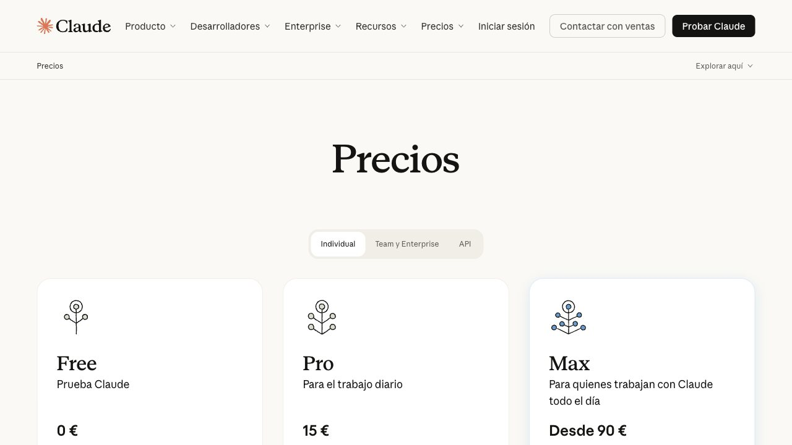

Qué es el límite de uso y cómo funciona
Si pagas un plan de Claude, Claude Code gasta de la misma cuota que el chat. Según la documentación y la prensa especializada, hay dos límites a la vez: una ventana móvil de unas 5 horas, que empieza cuando envías tu primer mensaje, y un tope semanal que se reinicia en una hora fija de tu cuenta. Si llegas a cualquiera de los dos, Claude Code te avisa y tienes que esperar.
Anthropic no publica un número exacto de mensajes o de tokens por plan: solo explica las diferencias como múltiplos (Max 5x y Max 20x frente a Pro). Además, ha ido cambiando los límites varias veces durante 2026, así que desconfía de cualquier cifra cerrada que veas en un blog, incluidos los que copian a otros.
Cómo ver cuánto llevas gastado
Dentro de Claude Code, escribe este comando:
/usageTe enseña cuánto de tu ventana de 5 horas y de tu tope semanal has consumido y cuándo se reinician. Mírala antes de empezar una tarea larga, no cuando ya se ha cortado. Ojo: /clear limpia el contexto de la conversación, pero no recupera cuota ni reinicia el temporizador.
Por qué se gasta tan rápido
- El modelo. Los modelos más grandes (Opus) gastan bastante más cuota que los medianos (Sonnet) para la misma tarea.
- Las sesiones largas. En cada mensaje, Claude vuelve a leer toda la conversación. Cuanto más larga es, más cuesta cada respuesta. Lo explicamos en ventana de contexto y memoria.
- Dejarle explorar sin rumbo. Pedir «mejora este proyecto» le hace leer muchos archivos. Pedir «cambia esta función» gasta una fracción.
- Los reintentos. Cada vez que algo falla y le pides que lo vuelva a intentar, vuelves a pagar la conversación entera.
Seis trucos para gastar menos
- Una tarea, una conversación. Cuando acabes algo, usa
/clearantes de empezar lo siguiente. Es el ahorro más grande y más fácil. - Compacta si no quieres perder el hilo.
/compactresume la conversación y libera contexto. - Elige el modelo según la tarea. Con
/modelpuedes usar uno mediano para lo rutinario y reservar el grande para lo difícil. - Sé concreto. Nombra el archivo y la función. Cuanto menos tenga que buscar, menos gasta.
- Mantén corto tu archivo CLAUDE.md. Se carga en cada conversación; si es enorme, lo pagas cada vez.
- Divide lo grande. Pide un plan primero y ejecuta por partes. Si el plan es malo, lo descubres barato.
Qué opciones tienes
- Esperar al reinicio. Es gratis y, con la ventana de 5 horas, suele ser lo más sencillo.
- Subir de plan. Tiene sentido si te pasa casi a diario y Claude Code es parte de tu trabajo.
- Pagar por uso con la API. No hay ventana, pagas por lo que gastas. Hicimos las cuentas en cuánto cuesta de verdad usar la IA por API.
- Seguir con modelos gratis. Existe una herramienta gratuita que conecta Claude Code con los planes gratuitos de otros proveedores y salta sola al siguiente cuando uno se agota. No es Claude y no tiene su capacidad, pero sirve para no parar. Tienes los pasos en Claude Code con modelos gratis: freellmapi.
- Usar un modelo en tu ordenador. Sin límites de uso, pero con menos capacidad y exige un equipo potente: IA local.
Comandos para controlar tu gasto
/usageCuánto llevas y cuándo se reinicia./contextQué llena tu conversación./compactResume para liberar espacio./clearEmpieza una tarea nueva./modelCambia a un modelo más ligero.Todos los comandos, con botón de copiar, en comandos de Claude Code.
Lo honesto
Los límites son una decisión de negocio de Anthropic y han cambiado más de una vez. Lo que hoy es válido puede dejar de serlo en semanas. Esta guía te da el método (mirar /usage, gastar menos, tener un plan B) y no promete cifras. Si necesitas la cifra de tu plan, está en la página de planes de Anthropic.
Esta guía forma parte de Claude Code en español: todas las guías, en orden.
Preguntas frecuentes
¿Cuántos mensajes me da Claude Pro en Claude Code?
Anthropic no publica una cifra fija. Depende del modelo, de la longitud de tus conversaciones y de los cambios que haga en los límites. Usa el comando /usage para ver cuánto llevas.
¿Se reinicia el límite si uso /clear?
No. /clear vacía el contexto de la conversación para que las siguientes respuestas gasten menos, pero no devuelve cuota ni reinicia el temporizador.
¿Cuánto dura la ventana de 5 horas?
Es una ventana móvil que empieza cuando envías tu primer mensaje y se reinicia unas 5 horas después. Además existe un tope semanal aparte.
¿Puedo usar Claude Code gratis?
Claude Code se usa normalmente con un plan de pago de Claude o con créditos de API. Comprueba en la página de planes de Anthropic qué incluye el tuyo. Como alternativa gratuita, puedes conectarlo a modelos gratuitos de otros proveedores, sabiendo que no son Claude.